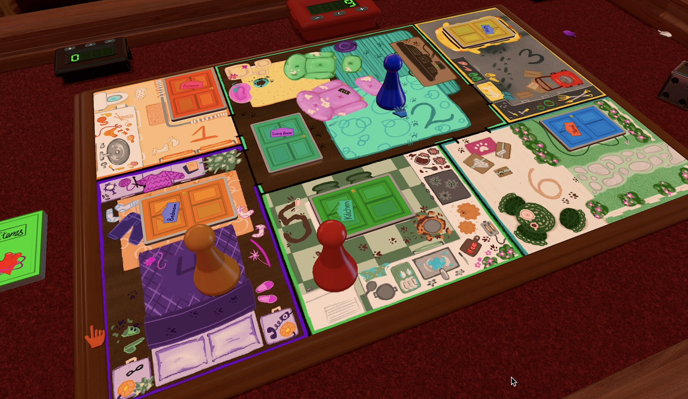
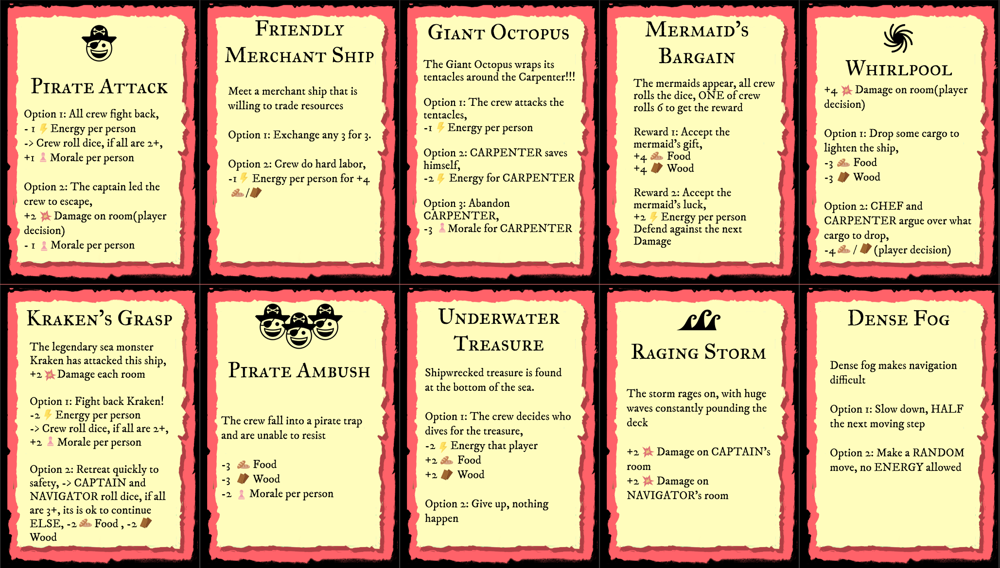
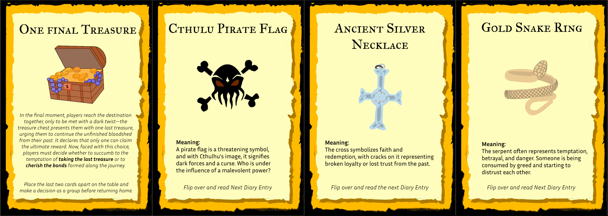

Projects Overview
Project Goals:
-
Purr-suation (People Fun Board Game): Apply experiential and social system design to create a highly interactive game that leverages player creativity and deception as core mechanics, ensuring an engaging and socially dynamic play experience.
-
The Lost (Transformative Board Game):
Explore gameplay as an experiential and social system by designing a game that challenges players with ethical dilemmas and survival decisions, encouraging reflection on morality through immersive storytelling and meaningful player choices.
My Role: Game Designer & Mechanics
Collaborators:
- Natalie Kayda – Team Leader & Documentation Lead
- Abhishek Mishra – Designer & Team Support
- Ray Wang – Narrative Integration Lead
- Eason Zhang – Setup & User Experience
Built With:
- Figma (collaborative design & management)
- Premiere Pro (video editing)
- After Effect (VFX)
- Procreate (visual design)
- Tabletop Simulator (testing & recording)
Work Time: 4 Months (September 2024 - December 2024)
Showcase:
Purr-suation (People Fun Board Game)
The Lost (Transformative Board Game)
Achievement:
Both Purr-suasion and The Lost were selected for the SFU SIAT Online Project Gallery and featured on SFU Showcase’s webpages.
Project Description
Purr-suation
A fun and competitive game featuring multiple cats as protagonists. Players take on the roles of different cats and use various strategies—especially persuasion—to win. Players must collect Cutie Points before "Grandma" comes home while interacting with each other through persuasion, competition, and interference. The player with the most Cutie Points before Grandma arrives is crowned as the cutest cat.

A vibrant and interactive game board featuring themed rooms, player movement, and dynamic in-game actions
The Lost
A pirate-themed cooperative survival adventure game, where players must work together to maintain the ship and crew while recovering lost memories and treasures. Four players take on the roles of different crew members (Captain, Navigator, Chef, Carpenter) and navigate the mysterious seas, collecting three key treasures to unlock the final mystery. Successfully gather all three treasures while keeping the crew alive and overcoming resource shortages.

Players engaged in a tabletop game, managing resources, action cards, and a sea navigation map
Purr-suation Game Design
Core Mechanics & Balance
- Centered on persuasion and debate, with players vying for “Cutie Points” while moving around a board.
- Dice rolls determine movement, and Item Cards let players resolve conflicts or interfere with opponents.
- Conflicts require persuasion or debate to gain advantages and extra points.
- The game ends when “Grandma” arrives; the player with the most Cutie Points wins.
My Works
- I balanced Item Card strength, adjusted point rewards from conflicts, and optimized conflict difficulty to ensure fairness and fun. I conducted multiple playtests to gather feedback and iterated on dice-based movement and persuasion mechanics to prevent frustration or runaway leads.
Card & Visual Design
- Features Item Cards that can alter gameplay, trigger special effects, or help players defend themselves.
- The overall art style is cute, cat-themed, consistent with the game’s playful narrative and board design.
My Works
- I designed the game logo and maintained visual coherence across the board, rulebook, and promotional materials. I also illustrated the Item Cards, defining their functionality and thematic artwork while ensuring consistency.


Purr-suasion game logo and some Item Cards
The Lost Game Design
Core Mechanics & Balance
- A pirate-themed survival game focusing on three key resources: Morale, Energy, and Resources.
- Players take on distinct roles (e.g., Captain, Navigator, Chef, Carpenter), each with unique skills.
- The team faces various Event Cards, which may deplete resources or offer unexpected boosts, all while they explore islands to collect three treasures.
- Victory requires balancing survival and gathering treasures; depletion of key resources can result in failure.
My Works
- I desigened and calibrated the interplay among Morale, Energy, and Resources to keep the game tense but not overly punishing, while adjusting difficulty by refining Event Card effects to ensure resource scarcity felt challenging yet fair.
Card & Visual Design
- Incorporates Event Cards that introduce random scenarios, from fierce storms to crew squabbles, each affecting resources or morale.
- The aesthetic embraces a pirate-adventure style, with illustrations reflecting a mysterious, seafaring tone.
My Works
- I designed and illustrated the Cards, handling both artwork and text content as they are a core part of the game's enjoyment. I also implemented adjustments, such as recalibrating Card frequencies and refining resource distribution, to ensure the game remained engaging and survivable. Additionally, I created a Wix website that aligns with the game's visual style.


Board game card design and illustrations, featuring event challenges and symbolic treasures
Takeaways
Through these projects, I deepened my understanding of integrating player experience into game mechanics. Frequent playtests helped refine conflict resolution, resource management, and difficulty balancing, ensuring each game remained engaging yet accessible. Collaboration played a key role in maintaining thematic and mechanical consistency. Working closely with teammates specializing in narrative, UX, and design, I helped align game elements to create a cohesive experience.
Beyond game design, I leveraged tools like Figma for collaboration and Procreate for artwork, ensuring efficiency from concept to execution. Through these experiences, I gained a deeper understanding of how People Fun encourages interaction and humor, while Transformative Fun fosters emotional investment and moral decision-making. Merging mechanics, storytelling, and iterative design, I created two polished board games that demonstrate my ability to craft meaningful, engaging experiences.